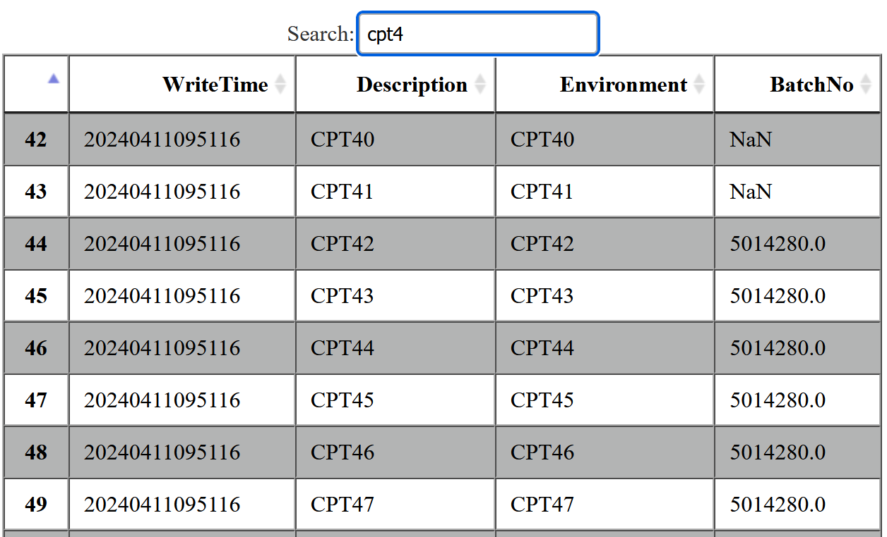
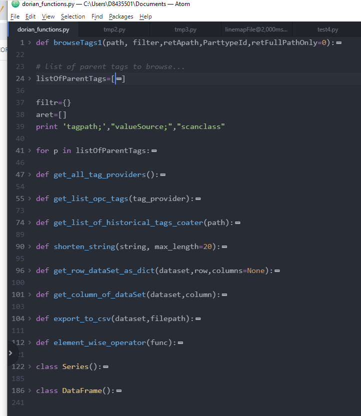
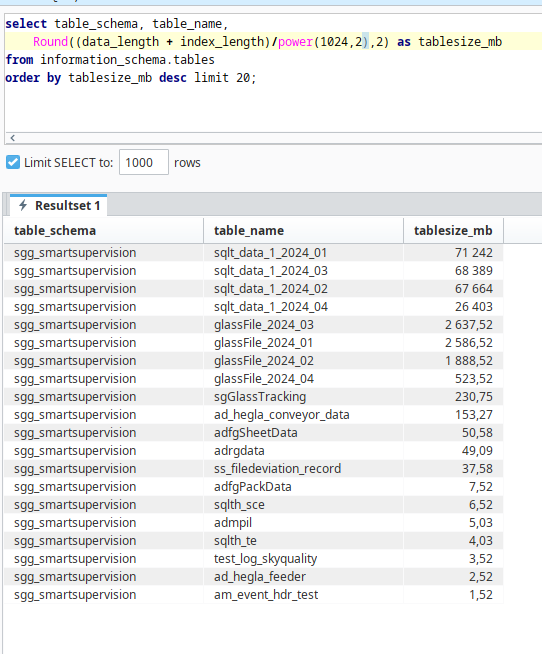

suivi des activités de Dorian Drevon
logbook
mardi 16 avril 2024
-
Meeting with sudharsan. Okta does not work for sudharsan. He checks with IT department to set up okta.
Working on bug overview page
lundi 15 avril 2024
- meeting with Jean Yves
- create gitlab repository of setup management
vendredi 12 avril 2024
- create ticket to build retroactively the glass files for salaise code development. Start with CAL data.
issue#2
jeudi 11 avril 2024
-
look at line mapping files generate them == snapshot of the overview. Which glasssId are in which compartments at a given time.

- populate and create an action plan for dabrowa issues on service now ticket
- Meeting DAB team smart supervision
- functions_utils
Create git repo on github for functions_utils.
the goal is to enhance python2.7 by creating a mini pandas code.

mercredi 10 avril 2024
- solve problem access to coatify server with dragutin
-
building retroactively glass files from historian
mardi 9 avril 2024
- get disk space usage of db tables in CAL since front,end positions historized.

- building retroactively glass files from historian with CAL data
test equation in html
first equation written with latex:
So cool moreover...: `class{cmjx-highlight} {\delta=e^x.\alpha/(2*x)}`
- formula 2 : `\Omega=P_c*s*\delta t`
- formula du rendement: `\eta=P_(In)/P_(out)`